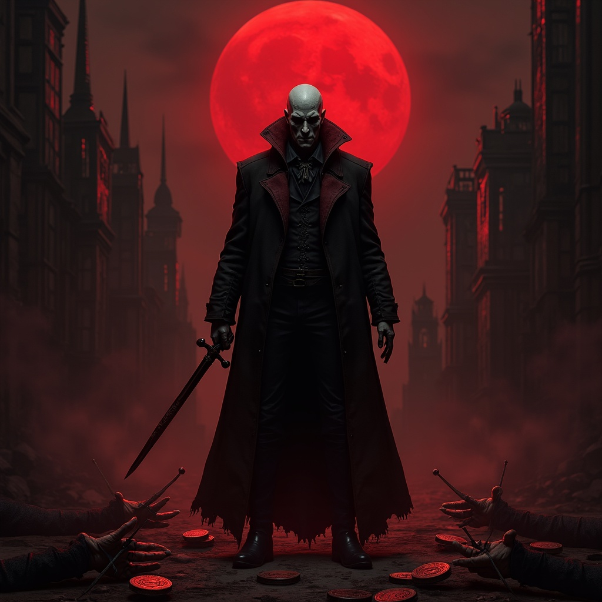

They walk among ruins and riches, memories and myths — gods who were once human. The Prir, known as the Walking Gods,
are not born divine but become divine. Some ascended through great deeds or deep wisdom. Others stumbled into
godhood by sheer chance, cruel fate, or cosmic whim. A few were elevated as reward, others as punishment. The
universe, it seems, has a sense of humor.
No two Prir are alike. Some are benevolent protectors, lighting the way for their followers. Others are
unpredictable, vengeful, or wholly indifferent to mortal concerns. Some still whisper to their worshipers, guide
kings, or stir the wind over battlefields. Others have vanished into silence, lost in their own eternity.
Yet all share one truth: their power is not infinite. It ebbs and flows with the devotion of those who believe.
Worship is the lifeblood of a Prir. Shrines, prayers, songs, and sacrifices feed their essence. A forgotten god is a
fading god. A beloved one burns like a star.
To understand the Prir is to understand the heights and failings of mortal existence itself — magnified, eternal, and walking
still.

Chernabog
Among the wandering tribes of the Iron Vale walked a man named Chern, a nameless wretch born beneath an eclipse. Misfortune
clung to him like a cloak — cattle died at his touch, crops withered under his shadow, and every village he sought
refuge in met ruin soon after. They cast him out with stones and fire, calling him bane-born.
Alone, starving, he wandered into the Dead Peaks, a place where the wind whispered secrets too old for men. There,
deep in a cave etched with impossible symbols, he met an agent of Kaos — the Primordial Writhing, the unmaker of
order.
“Why do you suffer, mortal?” it asked, its voice like the cracking of the world’s spine.
“Because I bring ruin,” Chern spat. “Because I am cursed.”
“No curse,” it replied, its many eyes gleaming. “You are my echo.”
In that moment, the agent of Kaos poured a fragment of itself into Chern, not as mercy, but amusement. The mortal screamed as
his flesh cracked like cooling magma and his soul twisted into something terrible and vast. When he emerged, Chern
was no longer man — he was Chernabog, God of Misfortune, Lord of the Blighted Path.
Chernabog did not weep for his humanity. He built his sanctum beneath the earth and from
stone and ash he molded the first orcs. Broad and brutal, with skin like scorched iron and eyes that gleamed with
hollow purpose, they called him Father of Rage.
He unleashed them upon the lands that had shunned him. Villages burned, rivers ran black, and where his shadow
passed, joy fled. But Chernabog was not mindless in his wrath. He spread despair like a gardener sows seed,
carefully, methodically, with divine patience. He whispered into the minds of kings, turned brothers against
brothers, and watched empires crumble from within.
In time, the other gods took notice and rose against him. They struck down his orcs scattering them into distant tribes,
shattered his temples, and cast his name from memory for a thousand years. But Chernabog could not die — not truly. For misfortune,
once born, cannot be undone.
To this day, when famine strikes or wars break without cause, some whisper that Chernabog walks again. Not with
sword, but with smile. Not with fire, but with silence. Waiting for the moment the world forgets its lessons.
And then, he will rise.

Herukan
In the ash-shadowed alleys of Varn Hollow, Herukan was born under a blood moon, the cries of his birth drowned by the
clang of copper coins. His parents, starving and sorrowful, sold him to the Carnival of the Shrieking Bell — a troupe of
cursed performers damned to wander until the end of time.
Herukan grew amid broken instruments and cruel laughter. A gnome with too-large eyes and nimble fingers, he learned to
play sorrow like a harp. His voice could summon tears from the dead. Crowds wept, but behind the curtains, the whip
still sang.
One night, after a brutal beating for outshining the ringmaster, Herukan crawled beneath the old stage and sang — not for
the crowd, but for himself. A lament so pure, so raw, that it peeled back the veil between realms.
Unwittingly, he awakened a slumbering Shard of Uzume. Buried in that exact spot on Skazka for thousands of years. The fragment of power, ignited by his voice,
joined with his soul.
The next show, Herukan sang. Time froze. Joy and madness fused. Mortals screamed in ecstasy. Demons wept. Gods turned to
listen.
The Carnival fell silent forever. Herukan stood alone amid hushed stars, his voice now law. The bards pray to him in
trembling harmony, though none dare sing his full name.
He never meant to become divine. He only wanted someone to listen.
Now, the world listens—and cannot stop.

Mortifer
In the merchant city of Velkaria of old Kajistan, where coin ruled more surely than kings, a man named Mortifer was
born. The youngest of seven sons.
watched his elder brothers inherit wealth, his sisters bask in admiration, and his father speak only of legacy — not
his.Jealousy took root early. Power, he believed, was not given but seized.
First, he poisoned his brother's wine. Subtle, slow. Next, he framed the second for a theft he himself
committed — execution and shame on the family followed. The third he pushed from a tower. With tears convincingly painted on his cheeks he blamed a
mysterious intruder. With each corpse, his influence grew. When his father finally looked upon him with realisation and fear instead of
indifference, Mortifer smiled.
But wealth did not sate him. Titles did not quench his thirst. His ambitions grew darker than the deepest catacombs. He
learned forbidden rites from exiled warlocks, whispered prayers in blood, and carved runes into his flesh to court forbidden
Powers.
One night, beneath a crimson moon, he slew the entire merchant council — thirteen blades, thirteen hearts,
thirteen names carved into bone. The city fell into chaos, but Mortifer stood unscathed, cloaked in shadow, drenched in
divinity.
The universe, repulsed yet intrigued, watched as the souls of the slain clung to him. With each act of murder, his essence
thickened. He was no longer mortal.
He was Murder.
Now, when a blade is drawn with intent, when hatred pulses behind the eyes of men, Mortifer is there — watching, grinning,
growing.
He became a god not by prayer, but by proof: that death is power, and power, absolute.

Agos

Silithus

Leonarah

Surrana

Cormarin

Sylka

Than

Ioun

Lunica

Mani